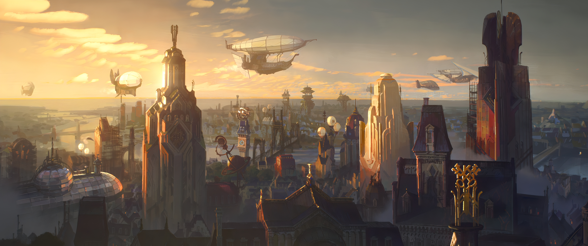
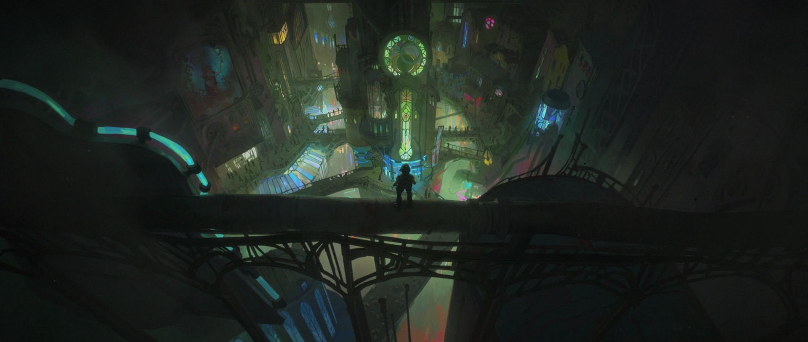
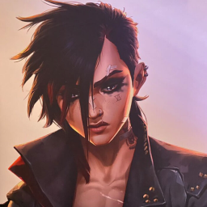
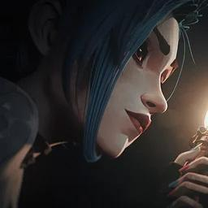
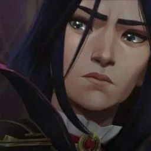
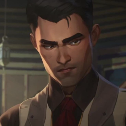
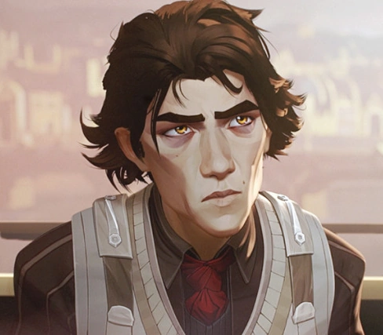
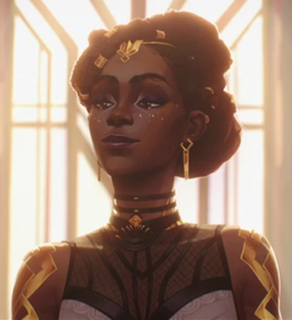

La Història de Piltover i Zaun


Arcane se centra en les ciutats bessones de Piltover i Zaun, separades per una gran divisió social i econòmica. Piltover representa el progrés i la tecnologia, mentre que Zaun és un lloc de supervivència i innovació no regulada.
La sèrie segueix les germanes Vi i Powder (que es converteix en Jinx) mentre naveguen per aquest món complex, on la ciència i la màgia es barregen, i on les decisions del passat tenen conseqüències devastadores per al futur.
Personatges Principals
Vi

Una lluitadora amb guants de ferro que busca la seva germana perduda i lluita per la justícia a Zaun.
Jinx

Una inventora caòtica i impredictible que es converteix en una amenaça per a tots els que l'envolten.
Caitlyn

Una sheriff de Piltover que treballa per mantenir l'ordre i la llei a la ciutat.
Jayce

Un inventor brillant que desenvolupa tecnologia revolucionària que canvia el món.
Viktor

Un científic de Zaun impulsat pel desig de millorar la vida de la gent mitjançant la tecnologia Hextech.
Mel Medarda

Una astuta política i membre del consell de Piltover amb un passat complex relacionat amb Noxus.